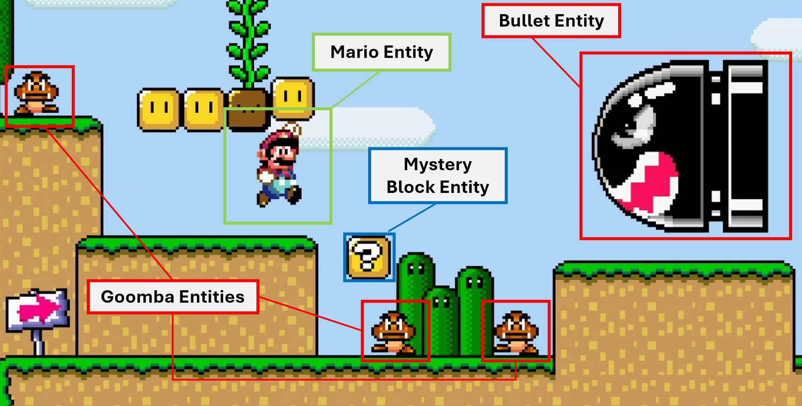

Game Engines
Last week, we built and designed a game of Pong from scratch using Raylib. We learned the fundamentals of game programming, coordinate systems, and how to program game logic. Now, we're going to learn how to make games using game engines.
The primary difference between making games from scratch and from engine is that, in engines, you must learn the systems the developers of the engine designed, and how you can use those systems to design games of your own.
What are Game Engines?
Game engines, put simply, are technical tools meant to assist developers in creating games without having to build everything from the ground up. As we talked about last week, many video games have common components in graphics, audio, physics, and other components.
The purpose of a game engine is to be a generic solution for these problems. "Generic" meaning it tries to solve the problem to work for as many developers to make their games. Obviously, it's not possible for one game engine to solve all problems for all game developers. That's why there are multiple different engines in the industry, and each one tries to solve the common technical problems (audio, graphics, etc..) of game development in a way that allows developers to use that engine to create certain types of games.
Within the constrained framework that game engines provide, developers have the freedom to use the systems provided to make their own games.
Why Godot?
There are various popular game engines used in the industry. Arguably the biggest three are Unity, Unreal, and Godot. For this bootcamp we chose Godot, the reason why is that Godot is one of the simplest game engines you can learn to use quickly, which makes it a perfect fit for this course. Unity and Unreal on the other hand, are more complex, conversely, they take longer to learn.
Entities
Despite the differences between these game engines, there are some things that most if not all game engines have in common. One of them is an entity system.
Most engines handle their logic and data encapsulated in units called "Entities". Entities — also known as Game Objects or Actors — are effectively the building blocks of the game. They are the objects that populate the game world, and each entity has its own properties/data and logic/code.
All entities have some shared and common properties. For example, each entity may have:
-
A name and unique ID
-
A position in space (Can be 2D or 3D)
-
A place in a general game hierarchy (sometimes called a tree)
-
Some other properties depending on the game engine
We discussed last week the concept of the Update function in games. That is the code that is executed on a per-frame basis. When we were making Pong, we had one big update function to handle the logic of the entire game. In game engines, the game is still updated on a per-frame basis, however, instead of one update function to handle the entire game, there are often multiple, smaller update functions that handle the logic for each entity.
Let's take a hypothetical example from Super Mario.

Here, we have multiple entities on the screen. The point to keep in mind here is that each one of these entities have their own state (data) and logic functions for being updated that are executed each frame. If we take the Mario Entity for example:
var name : String # name of the entity; "Mario"
var position : Vector2 # current position in space
var velocity : Vector2 # current movement vector
var num_lives : int # number of lives left before game is over
var health : float # amount of health before life is lost
var is_on_ground : bool # standing on ground or airborne?
GDScript
From here on out, we'll be coding using GDScript, which is the scripting language for Godot. The examples here should apply to most engines regardless of the language.
GDScript resembles Python in many ways. There is a page in the "Godot Resources" directory for learning GDScript which we recommend you read later. For now, the language is simple enough that you should be able to follow along with what's happening and what is meant by the code.
This is the total state or data that the Mario Entity code can access and modify. If we look at another hypothetical example for the the actual code for the entity.
func Update():
# move left or right based on player input
if is_on_ground == true:
# handle jump if player pressed jump
else:
# currently in the air: apply gravity
if colliding_with_enemy:
# take damage
The Update function is the same as the one we know from before; it is run once each frame. The only difference is that this function is "local" to just this one entity. Every other entity similarly has its own update function and mutable state that will affect the game.
Let's move on to another example for the Mystery Block Entity. The purpose of this entity is to spawn an item whenever Mario hits it for the first time.
var name : String # name of the entity; "Mystery Block"
var position : Vector2 # current position in space
var was_already_hit_before : bool # whether the block was hit before or not
var item : Item # what item the block gives when hit? coin, powerup, etc..
Here's what its logic would look like.
func Update():
if mario_hit_block: # mario hits the block
# first time mario hitting the block
if was_already_hit_before == false:
was_already_hit_before = true
item.Spawn()
Update Cycle
In game engines, there are multiple entities, therefore there are multiple Update functions. So, what's really happening between frames? What's happening is not much different from what you might expect or already know from last week.
Taking the Mario example from earlier. There are at least 6 entities we highlighted. So, those are 6 Update functions, some of them are the same functions, but happen to be on different entities that have different data (for examaple, the Goombas are not all in the same place). In any case, each frame, the Update functions are all called in some order, then the frame is rendered to the screen, and it repeats.
Frame 1
-
Mario
Updateis called -
Mystery Block
Updateis called -
Goomba 1
Updateis called -
Goomba 2
Updateis called -
Goomba 3
Updateis called -
Bullet
Updateis called -
Each entity is rendered (drawn) to the screen
Frame 2
- Same as last frame
No given entity's Update function is called more than once in the same frame, and the entities are all updated first then rendered to the screen, then the cycle repeats.
This is how the vast majority of game engine's handle their "entities". Of course, each engine may have a different word for "entity" (GameObject for Unity, Node for Godot...) but the concept of having self-contained stateful objects that have code and exist in the game world is almost universal among the big game engines, and it's the same for all of them.
Assets
One final topic about common game engine elements we will discuss before moving on to the next section is assets.
In the previous section where we made Pong, we depended entirely on just rectangles and circles for the visuals. Ideally though, our game would have more detailed and advanced digital content such as models, images, textures, sounds, etc...
These pieces of digital content that go into our game are called assets. Game engines come with their own way of importing assets and using them in-game.
Assets can be tethered or connected to our entities to create believable, immersive, and coherent game worlds. They can be set through the editor of the engine, or set and changed through code to respond to events.
Here's an example of a Mario sprite asset being used inside the Super Mario game.

As you can see, there is a general "sheet" of sprites containing many images of Mario, but in the game, we can see Mario as an entity clearly moving around and interacting with the world. In here, it's as if we've "clipped" the sprite from the sheet, and glued it onto the Mario entity in the game to give it life.
In reality, this is what happens most of the time in game engines. If the sprite didn't exist, we would not be able to see Mario at all, or we would see him just as a lifeless rectangle. The asset we import from the sheet to the game gives our entity life.
And with that, we conclude this section on game engines. In the next section, we will talk more about Godot and how it works.